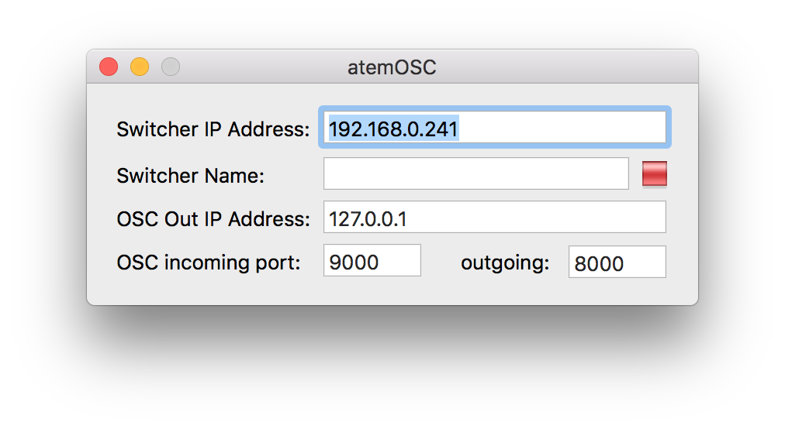

atemOSC
OSC-bridge for controlling ATEM switchers
atemOSC is an open source project which acts as a bridge between OSC and Blackmagic Design ATEM switchers.
Getting started
Downloading
In order to get started with atemOSC, download the latest build from our GitHub repo. The current software is built for ATEM v7.2.
Once downloaded, unzip the folder and copy the atemOSC .app file over to your applications folder.
Next, open the app, enter your ATEM switchers IP address and atemOSC will connect automatically.
OSC API
To see the full list of OSC addresses, use the Help menu within atemOSC and choose OSC addresses.
Program selection
- Black /atem/program/0
- Input 1 /atem/program/1
- Input 2 /atem/program/2
- Input 3 /atem/program/3
- Input 4 /atem/program/4
- and so on...
- Bars /atem/program/7
- Color 1 /atem/program/8
- Color 2 /atem/program/9
- Media Player 1 /atem/program/10
- Media Player 2 /atem/program/12
Feedback: Enabled for all values.
Preview selection
- Black /atem/preview/0
- Input 1 /atem/preview/1
- Input 2 /atem/preview/2
- Input 3 /atem/preview/3
- Input 4 /atem/preview/4
- and so on...
- Bars /atem/preview/7
- Color 1 /atem/preview/8
- Color 2 /atem/preview/9
- Media Player 1 /atem/preview/10
- Media Player 2 /atem/preview/12
Feedback: Enabled for all values.
Transitions
- T-bar /atem/transition/bar <0-1>
- Cut /atem/transition/cut
- Auto /atem/transition/auto
- Fade-to-black /atem/transition/ftb
Setting transition type
- Mix /atem/transition/set-type/mix
- Dip /atem/transition/set-type/dip
- Wipe /atem/transition/set-type/wipe
- Stinger /atem/transition/set-type/sting
- DVE /atem/transition/set-type/dve
Feedback: None.
Auxiliary source selection
-
Aux /atem/aux/$i $x
- Where $x is an integer value that is a valid Aux source, and can be 1-6 depending on the capability of your ATEM switcher. Check the Help Menu for the correct values.
- e.g. /atem/aux/1 1 to set Aux 1 output to source 1 (Camera 1).
Feedback: None.
Upstream keyers
- Toggle On-Air Upstream Keyer $i /atem/usk/$i
- Prepare Upstream Keyer $i /atem/nextusk/$i
-
Set Upstream Keyer $i for Next Scene /atem/set-nextusk/$i <0|1>
- Send a value of 1 to show the USK after next transition, and 0 if you don’t want to show the USK after next transition.
- e.g. If USK 1 is on air, /atem/set-nextusk/1 1 will untie USK 1 so that it remains on, while /atem/set-nextusk/1 0 will tie USK 1 so that it will go off air after the next transition.
Feedback: Enabled for /atem/nextusk only.
Downstream keyers
- Auto Toggle On-Air Downstreamkeyer $i /atem/dsk/$i
- Cut Toggle On-Air Downstreamkeyer $i /atem/dsk/toggle/$i
-
Force On-Air Downstreamkeyer $i /atem/dsk/on-air/$i <0|1>
- Send a value of 1 to cut the DSK on-air, and a value of 0 to cut it off-air.
- Toggle Tie Downstreamkeyer $i /atem/dsk/tie/$i
-
Force Tie Downstreamkeyer $i /atem/dsk/set-tie/$i <0|1>
- Send a value of 1 to enable tie, and 0 to disable.
-
Set Downstreamkeyer $i for Next Scene /atem/dsk/set-next/$i <0|1>
- Send a value of 1 to show the DSK after next transition, and 0 if you don’t want to show the DSK after next transition.
- e.g. If DSK1 is on air, /atem/dsk/set-next/1 1 will untie DSK1 so that it remains on, while /atem/dsk/set-next/1 0 will tie DSK1 so that it will go off air after the next transition.
Feedback: Enabled for /atem/dsk/on-air and /atem/dsk/tie only.
Media players
-
Set Media Player $i source to Clip $x /atem/mplayer/$i/clip/$x
- Where $i can be 1 or 2, and $x can be 1 or 2 depending on the capability of your ATEM switcher.
- e.g. /atem/mplayer/2/clip/1
-
Set Media Player $i source to Still $x /atem/mplayer/$i/still/$x
- Where $i can be 1 or 2, and $x can be 1-20 depending on the capability of your ATEM switcher.
- e.g. /atem/mplayer/1/still/5
Feedback: None.
SuperSource (when available)
-
Toggle SuperSource Box $i enabled /atem/supersource/$i/enabled <0|1>
- Send a value of 1 to enable, and 0 to disable.
-
Set SuperSource Box $i source to input $x /atem/supersource/$i/source $x
- Where $x is a valid program source. Check the Help Menu for the correct values.
Other options are available. Check the Help Menu in the app for the full list.
Feedback: None.
Macros
Macros should be recorded within the ATEM Control Panel software.
Macros are stored within the ATEM in a 0-index array. This means that to access the first recorded Macro, you should use an index $i of 0, to access the second recorded Macro, you should use an index of 1 etc.
-
Get the Maximum Number of Macros /atem/macros/max-number
- Returns an int of the maximum number of Macros supported by your ATEM.
- Access to these Macros should be used via an index of n-1.
- Stop the currently active Macro (if any) /atem/macros/stop
-
Get the Name of a Macro /atem/macros/$i/name
- Returns a string with the name, or "" if the Macro is invalid.
-
Get the Description of a Macro /atem/macros/$i/description
- Returns a string with the description, or "" if the Macro is invalid.
-
Get whether the Macro at index $i is valid /atem/macros/$i/is-valid
- Returns an int of 0|1 to indicate whether the requested Macro is valid.
-
Run the Macro at index $i /atem/macros/$i/run
- Returns an int of 0|1 to indicate whether the requested Macro was executed. A 0 will be returned if the Macro is invalid, or does not exist.
Feedback: Enabled for /atem/macros/max-number, /atem/macros/$i/name, /atem/macros/$i/description, and /atem/macros/$i/is-valid. Also available On-Request (you can send the command to get the value in a return message).
Other
-
Request all feedback available /atem/send-status
- This will query the switcher and send back the status for the program/preview, transition control, keyers, and macros.
- e.g. This can be used when a new OSC client device is brought online, so that it gets the current status of the system.
Use cases
Here's a peek at some of the ways to control your ATEM with atemOSC.
iPad
In combination with TouchOSC, you can create, configure and control a custom layout for operating your ATEM. The beauty of this system is that you have complete control over what your control panel looks like.
MIDI panel
If you prefer a more tactile approach to your control panel, you can pick up just about any MIDI panel - and in combination with OSCulator - you can control your ATEM.
FAQs
"It's not working for me"
First things first, make sure your IP address has been entered correctly. If you're still experienceing issues, create an issue on our GitHub repo. It's okay if you're not a familar with GitHub, just follow the link, click on the green "New issue" option, create an account, and fill in as much information as you can!
"I have a feature request"
Excellent! Feel free to open an issue on our GitHub repo. Just be sure to check someone hasn't already requested the feature.